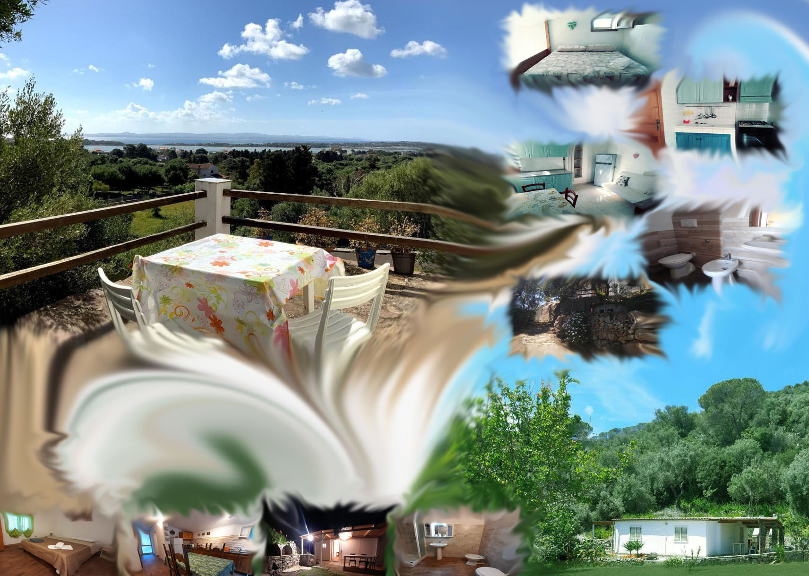

Benvenuti nel nostro sito!
Scopri le nostre strutture turistiche a Carloforte
Siamo lieti di accogliervi nella nostra selezione di strutture turistiche a Carloforte, un angolo di paradiso situato nell’estremo sud-ovest della Sardegna, sull’incantevole Isola di San Pietro.
Prenota il tuo soggiorno perfetto
Qui troverete ospitalità autentica, comfort e relax, immersi in un’atmosfera unica fatta di tradizioni, mare cristallino e tramonti mozzafiato.
Le nostre strutture
- Ca da Marta – Un’accogliente casa con vista sul mare.
- Garden House – Immersa nel verde per una vacanza in totale relax.
Perché scegliere noi?
- Alloggi confortevoli e curati
- Posizione strategica vicino alle spiagge
- Assistenza e consigli personalizzati
Scegliete il vostro rifugio perfetto anche in compagnia del vostro amico a quattro zampe e lasciatevi conquistare dal fascino di questa terra unica! 🌊☀️✨

🕊️ Novità dai dintorni
Partecipa a un evento speciale in zona: la Commemorazione della morte di Gesù Cristo.